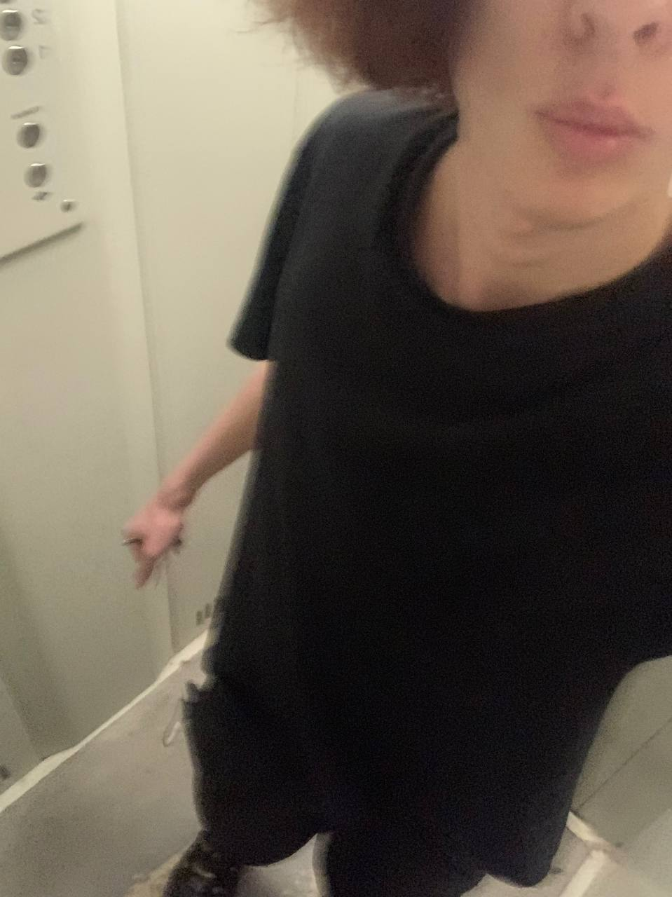
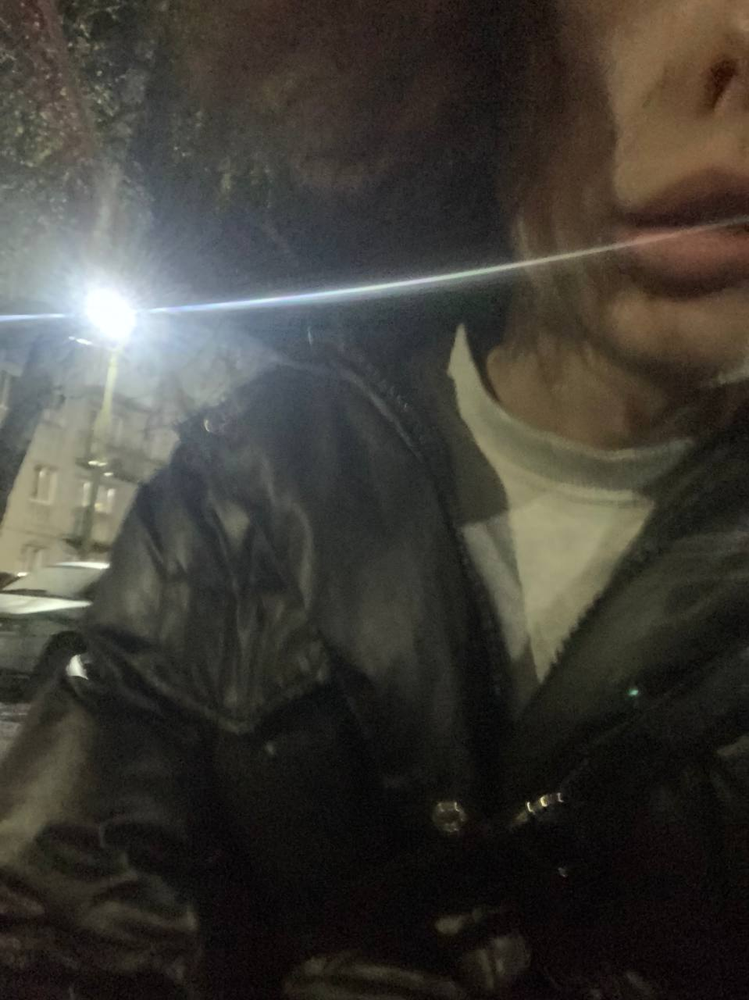
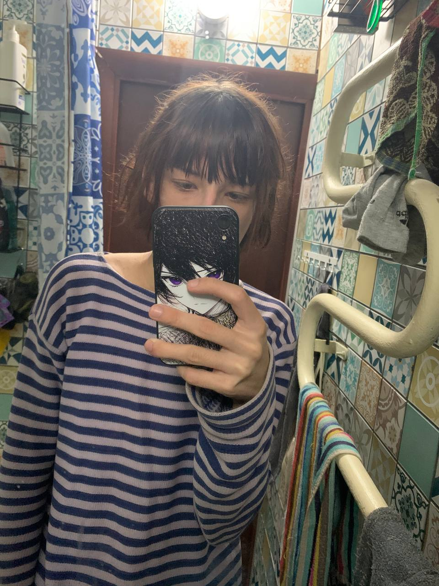
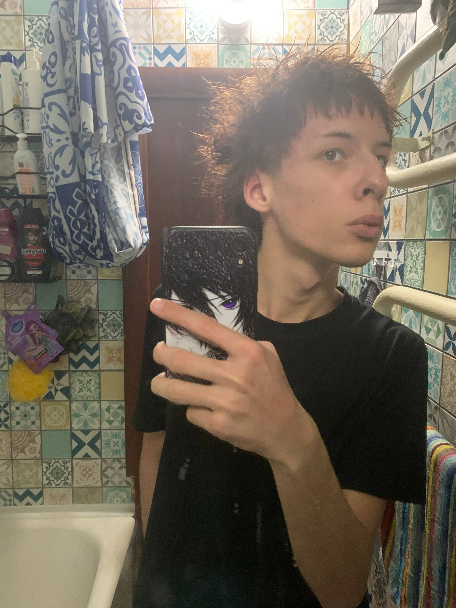
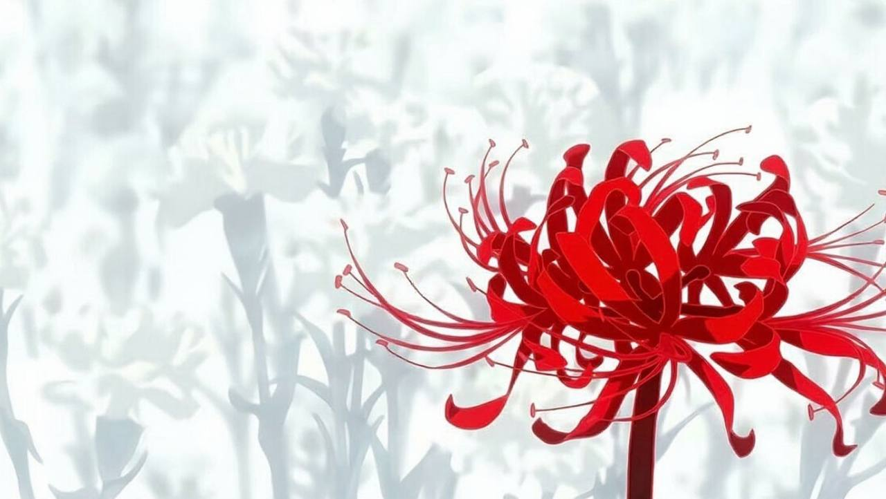
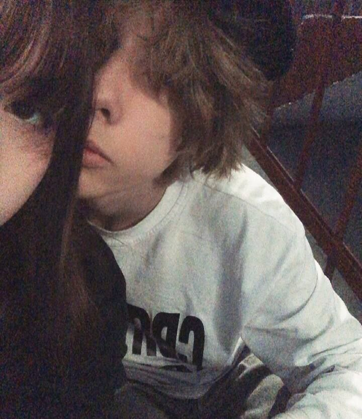
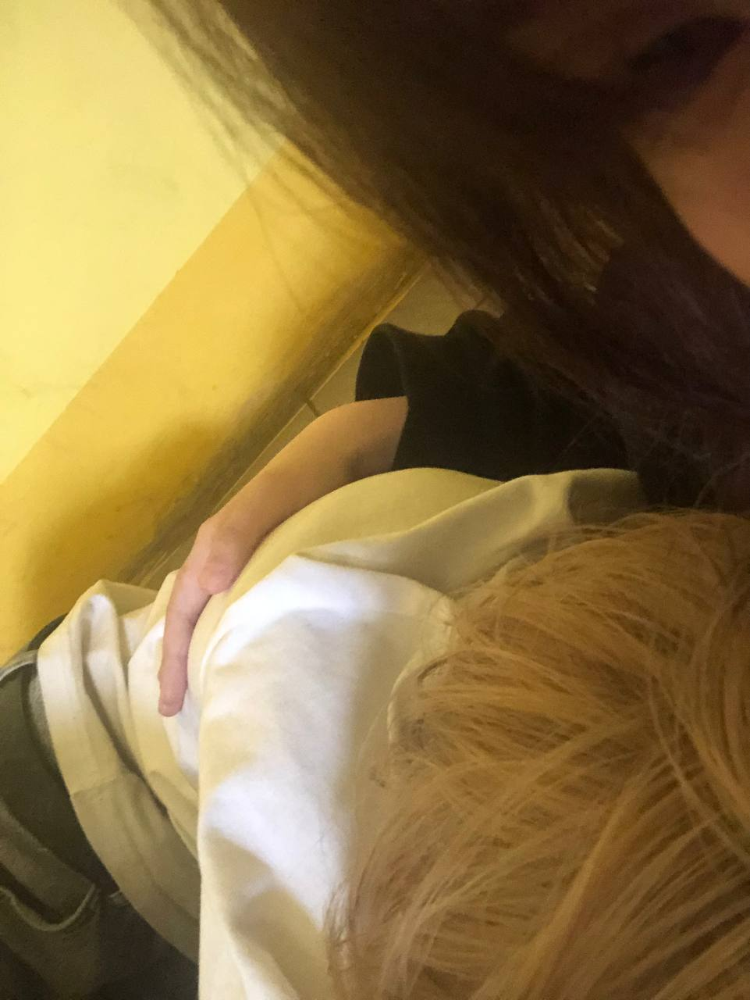
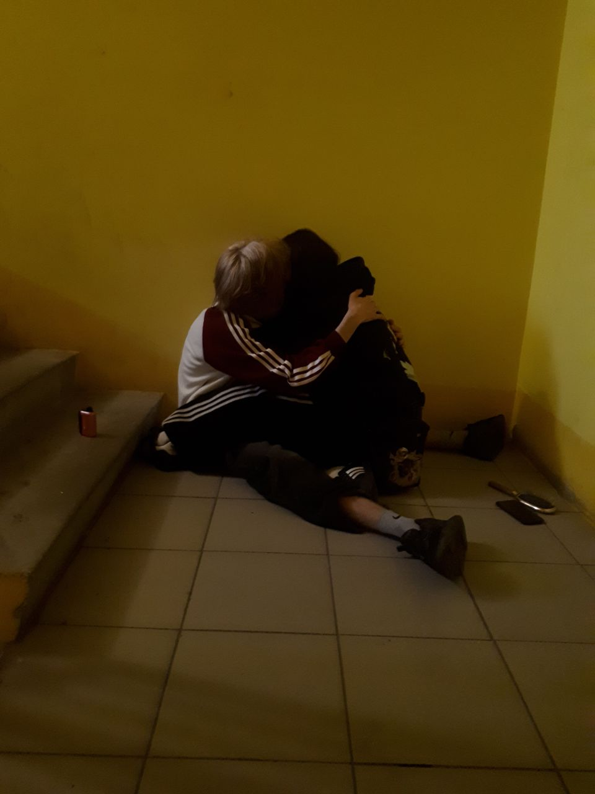
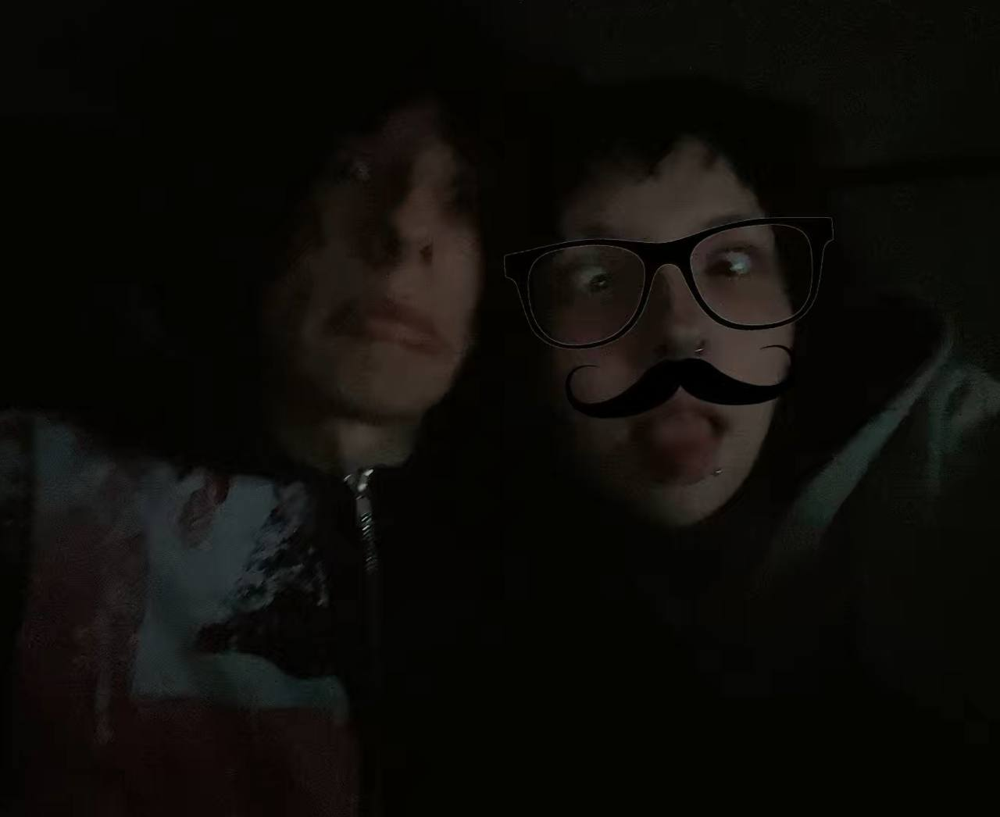
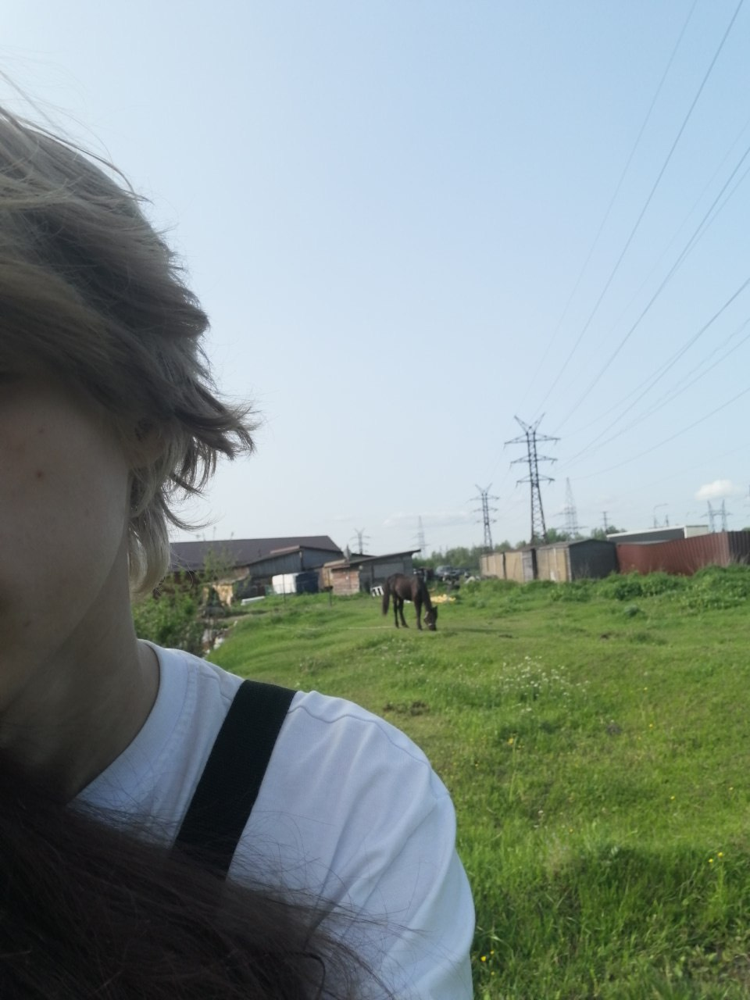

если вдруг станет грустно или одиноко...
нажми на кнопку ниже ✨
несколько слов..
мы познакомились очень давно. и я очень счастлив, что это случилось. ты действительно поменяла меня, может в худшую, может в лучшую сторону, хз. только бог знает. но мне было приятно встречаться с тобой, много раз, коих даже не счесть. много что мы пережили вместе, много веселых моментов, и много грустных. но я был рад провести их именно с тобой. ты очень запомнишься, и очень запоминлась у меня в душе и конечно в сердечке. сегодня 19.11.26, я пишу это все прямо сейчас в 22:43. к сожалению, мы стали меньше общаться, проводить с друг другом время, и все остальное, да это не очень. но я думаю, что это новый этап в жизни. и мы оба получили ценный опыт, какие должны быть отношения. а именно, - веселые, порой абьюзивные ( с обеих сторон), иногда милые, романтичные. и именно это я вынес, как ценный урок, встречаясь с тобой очень много. я надеюсь у тебя в жизни все пойдет в гору после меня, появится паренек, который будет тебя любить так же как любил я, надеюсь у вас все будет ахуено. но а про меня, а что про меня, про меня пока что можно забыть. нечего и сказать. лишь, люблю тебя, лиль. очень.
очень много я помню моментов с тобой, их не счесть. но я очень рад что с тобой познакомился!! ты открыла для меня мир в некоторых аспектах, я понял что такое любовь лишь благодаря тебе. забавно что прямо щас на фоне играет фотографирую закат. моя некогда любимая песня в 2021. не знаю что бы еще и сказать, вторая часть сайта хоть и доделана, но я не знаю есть ли смысл ее вставлять. если я все таки вставил, значит посчитал нужным, и решил что так будет лучше(наверное). если не вставил, то, значит подумал что нахуй надо и это будет не в тему. но ладно. я скучаю, тильчу, и просто упиваюсь колой моя цена прям ща, ебу жизнь c: . завтра подарят компьютер. но почему нету особой радости, я думал я буду визжать когда узнаю что будет такой день, но в итоге, почему то 0 эмоций. я не рассказываю это тебе в личке, потому что хочу вот сюда нахуй высказаться да и что, и что ты мне сделаешь. а ниче фак те через экран вхафыхаыхв cccc: . ладно. уебищное письмо получилось но я оставлю его, похуй. люблю тебя снова. хз че мне милое тут начирикать
fuck all that shit, diamonds on my dick, if you like me, you a stupid lil bitch
первая, пробная заметка, тест что она хотя бы работает, не отвалилась. в этих небольших заметках, я постараюсь разъяснить что вообще сейчас происходит в моей жизни, т.к мы понемногу теряем контакт. я встаю в 7:45, одеваюсь, кушаю, чищу зубки, и бегу в школу. в школе угараю, или что то делаю. потом иду домой, и тухну, смотрю тиктоки да и в целом все. сплю иногда. все
щъйа я слушаю lux aeterna - killer of the antichrist мне очень нравится этот трек. послушай.
цитатки и прочее..

soon life be happiness
жду чудо как пару лет назад
нарисуй улыбку карандашом
луна взошла я в новой фазе
world will be fine.
моя самая любимая фотография 💔

день нашего знакомства..
тут ты очень красивая, как и всегда 😳

наша первая фоточка 💖

наша самая ебанутая нахуй фотка 😈

самая милая фоточка 🥰